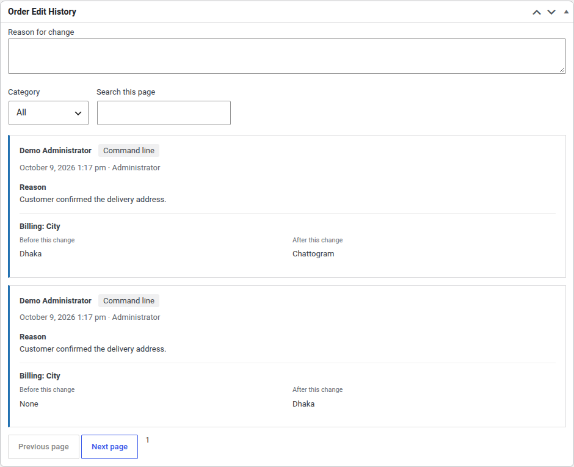
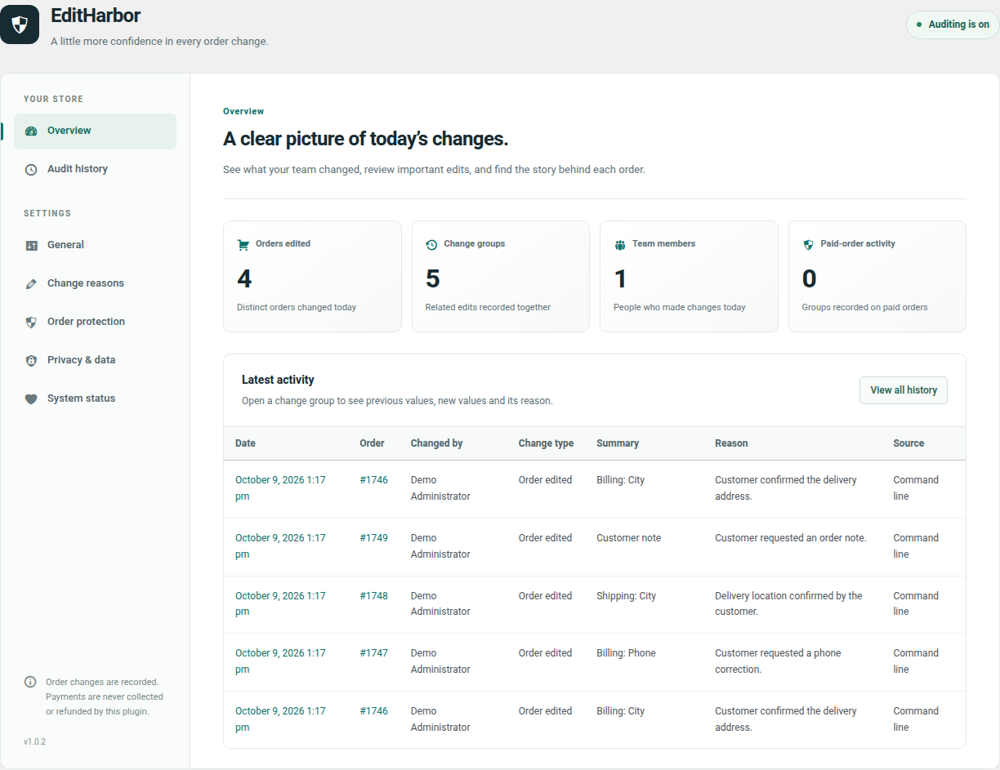

See what actually changed.
Read previous and current order values side by side. Follow changes to products, quantities, pricing, addresses, status, shipping, fees, coupons, taxes, and customer notes.
A clearer history for your store
Who changed the price? Why was the address updated? Give your team the context behind every WooCommerce order change.
No account needed for Free. Your audit data stays in your store.
“Customer confirmed the delivery address.”

Less guesswork. Better handovers.
Read previous and current order values side by side. Follow changes to products, quantities, pricing, addresses, status, shipping, fees, coupons, taxes, and customer notes.
Ask staff to explain meaningful changes. Keep reasons optional, require them for manual admin edits, or choose the statuses where an explanation matters.
Warn before financial edits to paid orders and changes to important statuses. Remind staff to review payment and fulfillment separately.
Filter the audit trail by period, order, staff member, category, and source. Give administrators a store-wide view and shop managers history on orders they can edit.
Inside the plugin
Explore Free’s auditing tools and Pro’s review workflows, all in one admin workspace.

Choose the right level of control
Free keeps the history. Pro adds tools for teams that need more control over order edits.
THE EVERYDAY AUDIT TRAIL
Understand the changes already happening in your store.
FOR TEAMS WITH REVIEW WORKFLOWS
Add a separate Pro extension to the Free plugin.
| What your team needs | Free | Free + Pro |
|---|---|---|
| Audit history, reasons, and edit warnings | Included | Included |
| Privacy controls and WooCommerce HPOS | Included | Included |
| Locks, field rules, and approvals | — | Included |
| Reports, CSV, and notifications | — | Included |
| Integrity, retention, and supported restores | — | Included |
Editing a paid order does not automatically collect the difference or refund a customer. Review payment and fulfillment separately in WooCommerce.
A few helpful answers
Install and activate WooCommerce first. Download the Free ZIP, then go to WordPress → Plugins → Add New → Upload Plugin. Activate it and open EditHarbor in the admin menu.
WordPress 6.5 or newer, PHP 7.4 or newer, and WooCommerce 8.2 or newer. Test required-reason settings with your store’s custom integrations on staging first.
Yes. Free supports WooCommerce High-Performance Order Storage and legacy order storage. It reads orders through WooCommerce CRUD APIs and stores audit records in separate plugin tables.
No. History begins when auditing is enabled. It records supported edits to existing orders; integrations that write directly to database tables may bypass the WooCommerce hooks it uses.
The Free plugin stores audit data locally and sends no telemetry. IP collection is off by default. Review privacy settings to choose how personal audit details are stored and displayed. Optional Pro notification workflows can send data to destinations you configure.
Use “Request Pro — US$50” to contact Shahnur Alam. Share your store’s WordPress and WooCommerce versions to confirm delivery, compatibility, licensing, and support details before purchasing. Pro is a separate add-on and needs the Free plugin.
Built by Shahnur Alam